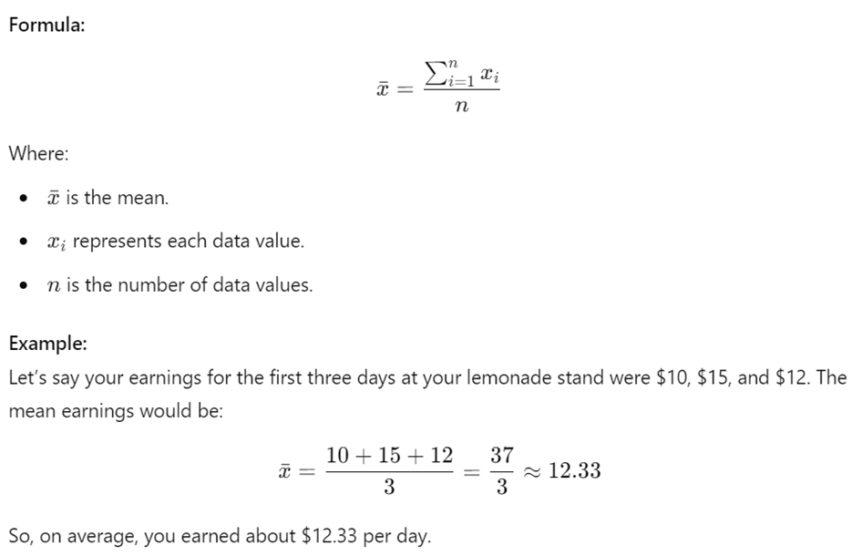

Unit 1 - Exploring One-Variable Data (Part 2)
This part covers the following topics:
Topic 1.5 Representing a Quantitative Variable with Graphs
Topic 1.6 Describing the Distribution of a Quantitative Variable
Topic 1.7 Summary Statistics for a Quantitative Variable
1. Identifying Key Features of Data
Graphical representations and statistics help us identify and highlight important features in a dataset. These features include the shape of the data distribution, the center, the spread, and any unusual points or outliers. By visualizing data, we can make sense of large amounts of information quickly and effectively.
Example:
Imagine you are given the test scores of 50 students in a class. Just looking at the numbers might be overwhelming, but if you create a graph, you can quickly see patterns, such as how most students scored around 80, if there are any particularly high or low scores, and whether the scores are evenly spread out.
2. Discrete and Continuous Variables
2.1 Discrete Variables
A discrete variable is one that can take on a countable number of values. This means you can list each possible value individually. The number of possible values might be finite (like the number of pets someone has) or countably infinite (like the number of times a coin could be flipped until you get heads).
Example:
The number of books a student reads in a month is a discrete variable. A student might read 0, 1, 2, or more books, but they cannot read 2.5 books.
2.2 Continuous Variables
A continuous variable, in contrast, can take on infinitely many values. Between any two values of a continuous variable, there s always another value. For instance, the height of a person is a continuous variable because you can always measure height more precisely (e.g., 170.5 cm, 170.55 cm, 170.555 cm, etc.).
Example:
If we measure the amount of time it takes for different students to run a mile, the time is a continuous variable. One student might take 7.5 minutes, another 7.51 minutes, and so on.
3. Graphical Representations of Data
3.1 Histograms
A histogram is a type of bar graph that shows the distribution of a dataset. The data is divided into intervals (or "bins"), and the height of each bar represents the number of observations within that interval. The shape of the histogram can give us insights into the distribution of the data, such as whether it is skewed or symmetric.
Example:
Let s say we track the daily high temperatures in a city for a month. We could create a histogram with intervals of 5 degrees (e.g., 60-65 F, 65-70 F, etc.) to see how temperatures were distributed.
3.2 Stem-and-Leaf Plots
A stem-and-leaf plot is a way to display data where each number is split into a "stem" (the first digit or digits) and a "leaf" (usually the last digit). This method allows you to see both the shape of the data and the actual values.
Here s a stem-and-leaf plot for a sample data set of ages of students in a high school class:
Sample Data Set: [15, 16, 16, 17, 17, 17, 18, 18, 18, 18, 19, 19, 20, 20, 21]
Stem-and-Leaf Plot:
1 | 5 6 6 7 7 7 8 8 8 8 9 9
2 | 0 0 1
In this plot:
The stem represents the tens place of the ages.
The leaf represents the units place of the ages.
For example, the age 15 is represented as 1 | 5, where 1 is the stem and 5 is the leaf.
3.3 Dotplots
A dotplot is a simple graph that uses dots to represent data points. Each dot corresponds to a data value, and dots are stacked vertically if multiple data points have the same value.
Example:
Here s a dotplot based on the assumed data of students study hours per week: [5, 5, 5, 4, 4, 3, 3, 3, 3, 2, 2, 1]
3.4 Cumulative Graphs
A cumulative graph shows the running total of a data set as you move through the data. It s useful for understanding how data accumulates over time or across different categories.
Example:
If we want to track the total number of goals scored by a soccer team throughout a season, a cumulative graph would show us how the total increases with each game.
3.5 Additional Graphical Representations
There are many other ways to visually represent data, such as box plots, scatter plots, and pie charts. Each type of graph has its strengths and is suited to different kinds of data and analyses.
Box Plots
A box plot, also known as a box-and-whisker plot, is a graphical representation of a dataset that shows its distribution. It provides a visual summary of the data s central tendency, variability, and skewness. Here s a breakdown of its components:
Components of a Box Plot
Example
Let s consider a dataset: [5, 7, 8, 12, 13, 14, 18, 21, 23, 25, 28, 30, 35]
Graph
Here s a simple box plot for the example dataset:
This graph shows the median, quartiles, whiskers, and any potential outliers.
Would you like to dive deeper into any specific aspect of box plots?
4. Real-World Example: Analyzing Movie Ratings
Imagine you want to analyze the ratings of a popular movie. You collect the ratings from 100 people and decide to represent this data graphically.
5. Free Response Problem
You have the following data on the number of books read by 20 students in a month:
Data: 3, 4, 4, 5, 5, 5, 6, 6, 6, 7, 7, 8, 8, 8, 9, 9, 10, 10, 11, 12
By understanding these graphical techniques, you ll be able to represent and interpret quantitative data effectively, making complex data easier to understand and analyze!
When we analyze data, it's crucial to understand how the data is distributed and what that tells us. By using graphical representations and statistics, we can identify key features of the data, such as the shape, center, variability (spread), and any unusual aspects like outliers, gaps, clusters, or multiple peaks. Let's break down these concepts.
1. Graphical Representations and Key Features of Data
Graphs are powerful tools that help us visualize data and see patterns that might not be immediately obvious from just looking at numbers. Common types of graphs include histograms, box plots, and dot plots. These graphs allow us to identify important features of the data, such as:
Example:
Let's say we have the following test scores from a math exam: 65, 72, 78, 82, 82, 84, 85, 88, 90, 95. We can create a dot plot to visually represent this data.
2. Describing the Distribution of Quantitative Data
To describe a data set, we focus on its shape, center, and spread:
Real-World Example:
Imagine you're a store owner tracking the number of customers visiting each day. Over two weeks, you notice that most days have between 50 and 70 customers, but one day had only 20 customers. The day with 20 customers is an outlier a value significantly different from the rest.
3. Understanding Outliers
An outlier is a data point that is significantly different from the other data points in the set. Outliers can occur due to measurement errors, experimental errors, or they may be real and indicate something significant.
Example:
Consider the data set: 10, 12, 14, 15, 18, 19, 100. Here, 100 is an outlier because it is much larger than the other numbers.
4. Skewed Distributions
A distribution is skewed to the right (positive skew) if the right tail (larger values) is longer than the left tail (smaller values). It is skewed to the left (negative skew) if the left tail is longer than the right tail. A distribution is symmetric if both tails are approximately equal.
5. Unimodal, Bimodal, and Uniform Distributions
Example:
6. Gaps and Clusters
A gap in a distribution is an area where no data points are found. Clusters are areas where data points are concentrated.
Example:
If you're analyzing temperatures over a month, and there are no recorded temperatures between 60 F and 70 F, that's a gap. If most temperatures are between 50 F and 60 F, that's a cluster.
7. Descriptive Statistics vs. Inferential Statistics
When working with data, it's important to understand the difference between descriptive statistics and inferential statistics. Both are fundamental tools in statistics, but they serve different purposes.
Descriptive Statistics
Descriptive statistics are used to summarize and describe the main features of a data set. This involves organizing the data in a meaningful way and presenting it through numbers, graphs, or tables. The goal is to provide a clear and concise overview of the data.
Key Components:
Example:
Let s say you surveyed 100 students about their favorite ice cream flavor. You
could use descriptive statistics to calculate the mean age of the students, the
most popular flavor (mode), and the range of ages.
Purpose: Descriptive statistics are used to present the characteristics of a sample or data set. They don't involve making predictions or generalizations beyond the data set.
Inferential Statistics
Inferential statistics, on the other hand, are used to make predictions or inferences about a larger population based on a sample of data. Since it's often impractical or impossible to collect data from an entire population, we take a sample and use inferential statistics to draw conclusions about the population.
Key Components:
Example:
Imagine you want to know the average height of all high school students in your
state. Instead of measuring every student, you measure a random sample of 200
students. You then use inferential statistics to estimate the average height of
all high school students in the state.
Purpose: Inferential statistics help us make decisions or predictions about a population based on a sample. It allows us to generalize findings and test hypotheses.
Free Response Problem
Imagine you're analyzing the test scores of two different classes. Here are the scores:
Class A: 55, 60, 65, 70, 75, 80, 85, 90, 95, 100
Class B: 55, 55, 60, 65, 70, 75, 80, 85, 90, 95
Graph Explanation
This exercise helps you visualize and understand the differences between two data sets and how graphical representations can reveal important features of data.
1. Introduction to Graphical Representations and Statistics
When we collect data, it can be challenging to understand what it tells us just by looking at a long list of numbers. That s where graphical representations (like graphs) and statistics (numerical summaries) come in. They help us identify and represent the key features of data, making it easier to understand patterns, trends, and outliers.
Example: Imagine you re running a lemonade stand and you record how much money you make each day for two weeks. Your earnings might look like this:
$10, $15, $12, $18, $20, $25, $17, $16, $22, $19, $30, $25, $20, $18
This is just a list of numbers, but if you create a bar graph or calculate some statistics, you can quickly see which days were the most profitable and how much your earnings varied.
2. What is a Statistic?
A statistic is simply a numerical summary of sample data. It helps to condense a large amount of data into a single number that provides useful information.
Real-World Example: The average score of a class on a test is a statistic. If 20 students take a test and the average score is 85, that number summarizes how well the class performed as a whole.
3. Understanding the Mean
The mean, often called the average, is a measure of central tendency. It s calculated by adding all the data values and then dividing by the number of values.

4. The Median: The Middle Value
The median is the middle value in a data set when the values are arranged in order. If the data set has an even number of values, the median is the average of the two middle numbers.
Example: Let s arrange your lemonade stand earnings for the week in ascending order:
$10, $12, $15, $16, $18, $20, $22
Since there are 7 data points, the median is the fourth value, which is $16. If you had an even number of days, say 8, the median would be the average of the 4th and 5th values.
5. Quartiles: Dividing Your Data
Quartiles divide your data into four equal parts.
Example: For the earnings data:
$10, $12, $15, $16, $18, $20, $22
6. Percentiles: Where Do You Stand?
Percentiles tell us the value below which a given percentage of data points fall.
Example: If you scored in the 90th percentile on a test, that means you scored better than 90% of the other test-takers.
7. Measures of Variability
Variability shows how spread out the data is. Common measures include:
Example: For your lemonade earnings:
8. Standard Deviation: How Much Do Values Vary?
Standard deviation (denoted by sss) shows how much data values vary from the mean. A smaller standard deviation means the data points are closer to the mean.
Example: Let s say you have the following earnings: $10, $12, $14, $16, $18$. The standard deviation will tell you how much these values differ from the mean.
9. The Impact of Changing Units
Changing the units of measurement (e.g., from dollars to cents) affects the values of the statistics but not the overall analysis.
Example: If your earnings were in cents instead of dollars, the mean, range, and other statistics would be multiplied by 100, but the pattern of your earnings wouldn t change.
10. Identifying Outliers
Outliers are data points that stand out from the rest. They can be identified using:
Example: If one day you earned $50 at your lemonade stand while the other days ranged from $10 to $20, $50 would be an outlier.
11. Resistant vs. Non-Resistant Measures
Some statistics are sensitive to outliers (non-resistant), while others are not (resistant).
Example: In the earnings example, if you had a day with $50 earnings, the mean would increase, but the median would remain closer to the center of the typical earnings.
Free Response Problem
You conducted a survey of how many hours your classmates studied last week. The data is as follows:
4, 8, 6, 10, 7, 5, 9, 6, 8, 5